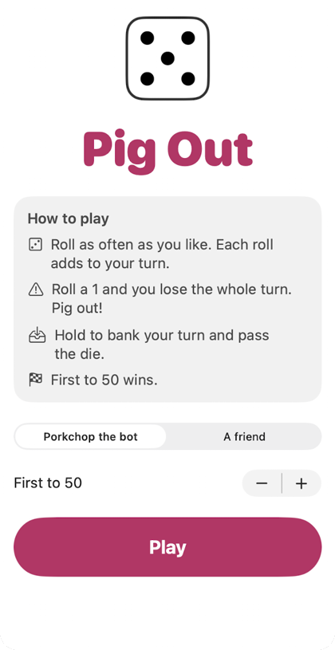
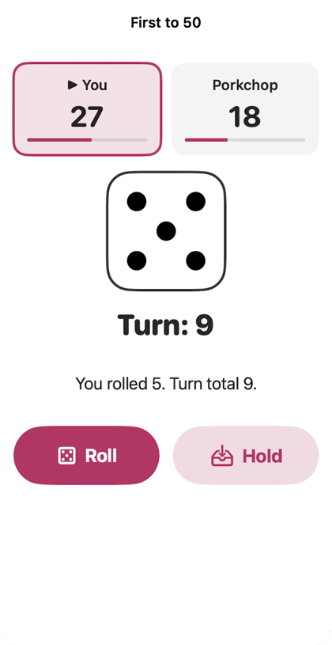
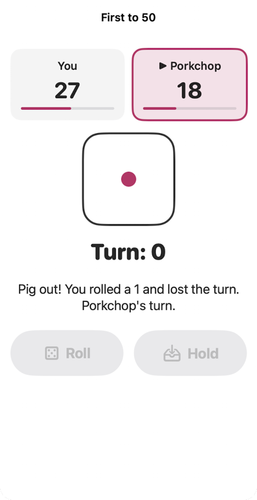
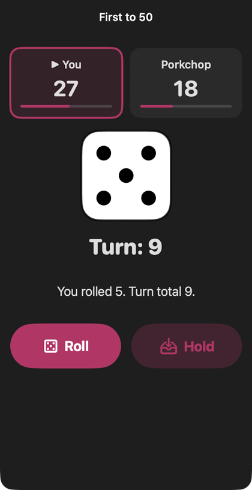

README
A push-your-luck dice game for iPad and iPhone. This is the README from the Playgrounds file, with screenshots. Plain text: README.md.




These screenshots come from the Swift code in the Playgrounds file. It was built and run as a Mac app, at a phone-sized window, from a set game state.
How to play
- Roll as often as you like. Each roll adds to your turn total.
- Roll a 1 and you lose the whole turn. Pig out!
- Hold to bank your turn total and pass the die.
- First to the target wins. The target starts at 50. You can set 20 to 100.
The two screens
- Screen 1, the title: the rules, who you play against, and the target.
- Screen 2, the game: two score cards, the die, your turn total and a message.
- Play against Porkchop the bot, or pass the iPad to a friend.
What you need
- An iPad or Mac with Swift Playgrounds, or a Mac with Xcode.
- iPadOS 17 or later. The app uses
sensoryFeedbackandAccessibilityNotification, which need 17.
How to open it
- Download PigOut.swiftpm.zip.
- Unzip it. You get
Pig Out.swiftpm. - Open it in Swift Playgrounds, or in Xcode on a Mac.
- Run it.
The files
PigGame.swift: the rules and the bot. No SwiftUI in here.TitleView.swift: screen 1.GameView.swift: screen 2, the score cards and the shake effect.DieView.swift: a die face drawn with circles.PigOutApp.swift: where the app starts.Package.swift: made by Swift Playgrounds. Do not edit it by hand.
Tests
The rules are tested on their own. The test file, main.swift, is on this site, not in the package. It must keep that name. On a Mac with Swift installed, put it next to PigGame.swift and run:
swiftc PigGame.swift main.swift -o pigtests && ./pigtestsAccessibility
- Every event is said in words on screen, and VoiceOver announces it.
- The die says "Die showing 4" to VoiceOver.
- Each score card reads as one line, like "You, 27 of 50, playing now".
- The player whose turn it is gets an arrow and an outline, not only a colour.
- With Reduce Motion on, the die does not spin or shake.
- Roll and Hold are 56 points tall.
Known problems
- In dark mode, pink text on black is about 3.7 to 1. Apple asks for 4.5 to 1 for small text.
- Porkchop only has one plan: hold at 20. Good players learn to beat it.
- Games are not saved. Leave screen 2 and the game is gone.